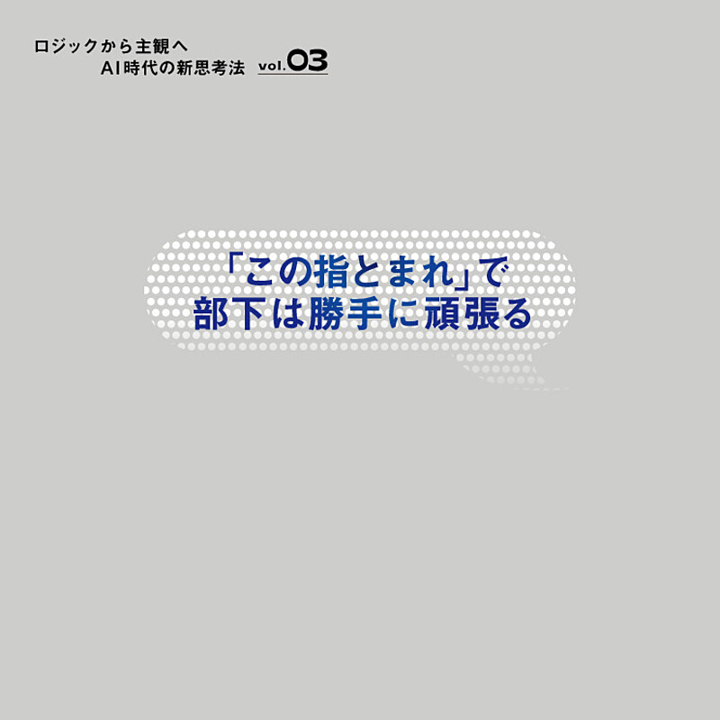

1. 【3分解説】グーグル、7兆円の「簿外債務」の正体
発行日時: 2026/07/31 05:30 JST
あなたに関係ありそうな理由: AIの競争力を、モデル性能だけでなく、計算資源を誰が資金面から支えるかまで含めて見る必要があるから。
NewsPicksオリジナルAlphabetはAI向け設備投資を二〇二六年に最大二〇五〇億ドルまで増やす一方、データセンター関連の信用デリバティブの想定元本を四三八億ドル、約七兆円まで膨らませた。これは同額の借金ではなく、相手方が支払い不能になった場合にGoogleが負担する最大額で、会計上の公正価値は約八億ドルだ。自前建設を得意としてきた巨大テックが、外部事業者の資金調達を保証する役に回り始めたことが重要である。ビットコイン採掘施設を持つTeraWulf、AIクラウドのFluidstack、計算資源を借りるAnthropicをつなぎ、GoogleがFluidstackの債務を保証する。新興事業者は低い金利で建設を進めやすく、Googleは新株予約権を得ながら、自社TPUの導入余地をつくる。半導体を売る競争が、顧客の設備投資を成立させる金融機能の競争へ広がった姿だ。コメント欄には、七兆円を煽情的な簿外債務と呼ぶより、開示済みの条件付き保証・偶発債務として理解すべきだという指摘があった。そのうえで、余剰計算資源の販売や保証の拡大は、用途ごとの需給の偏り、実需以上の投資を示す兆候かもしれないという議論も続く。AI基盤を見る時はチップ性能だけでなく、誰が設備を建て、どの長期契約で支払いを約束し、需要が外れた時にどこへ損失が残るかも確認したい。保証は成長を早めるが、リスクを消すものではなく、引受先を移す設計でもある。
さらに見落とせないのは、保証の広がりが市場の価格シグナルを鈍らせる可能性だ。データセンター建設は電力、土地、冷却、半導体を同時に押さえる長期投資で、需要予測が外れた時の調整は簡単ではない。保証を得た事業者は早く投資できるが、最終需要が足りなければ、契約と資産だけが残る。だから導入側も、供給が豊富だから安心とは考えず、サービス価格、契約更新、障害時の代替、ベンダーの資本政策を一つのリスク表で追う必要がある。金融が入ることでAIの成長は加速するが、同時に景気循環の影響も受けやすくなる。
技術の進化と資金の論理を分けず、両方を見ることが、投資熱に振り回されないための出発点になる。
資金の流れも製品の一部として読む必要がある。

仕事や会話で使える一言AIの次の競争は、チップを売ることから、投資を成立させることへ広がっています。
NewsPicks原文を読む
2. 【深刻】AI対応も検討。JRの「みどりの窓口」問題が根深い
発行日時: 2026/07/31 05:30 JST
あなたに関係ありそうな理由: AIで受付を速くしても、利用者が困る業務の分断や例外処理を残せば、体験全体は改善しないから。
NewsPicksオリジナルJR東日本は、立川駅と大宮駅で、音声で利用区間や日時を聞き取り、係員へ要望を整理して渡すAIの実証実験を行った。クーポン適用や空席を踏まえた座席指定も試せるが、対象は基本的な切符購入で、変更・払い戻しなどは扱わず、発券も人が担う。駅名の略称や俗称、周囲の雑音に対応するには、音声認識だけでなく鉄道の深い業務知識が必要だ。高齢者や訪日客が無理なく使えるかも、実用化までの重要な論点になる。AIを入口に入れることは前向きでも、利用者が困るのは、複雑な手続きが残ることと、どの経路で予約すればよいか分からないことだ。背景には二〇二一年の窓口七割削減がある。えきねっとなどへの移行を前提に窓口を減らしたが、通学定期の証明確認や変更のような業務をオンラインで置き換えないまま先行し、二〇二四年には主要駅が混雑して計画は凍結された。分断は各JR社の予約サービスにも及ぶ。えきねっと、スマートEX、e5489は同じマルスを基幹にしつつ、予約やログインがそろわない。表示可能なコメントはなかったが、示唆は明快だ。問い合わせ窓口にAIを置く前に、例外処理・担当部署・データの所在をつないでおく必要がある。AIは入口の摩擦を減らせても、組織やシステムの境目を越える責任までは引き受けない。
JRは四社間のシングルサインオンで改善へ動き始めたが、利用者から見れば、購入、変更、払い戻し、問い合わせが一続きに扱えるかが基準になる。自社の顧客接点でも同じである。最も簡単な問い合わせだけをAIに渡し、難しい案件を人に戻すなら、その受け渡しで情報や文脈を失わないことが不可欠だ。利用者に同じ説明を何度もさせない、途中で担当を探させない、処理できない理由と次の道筋を示す。こうした土台があって初めて、AIの応答速度は体験の改善になる。技術導入を業務削減だけで評価しない視点を持ちたい。
便利な自動化ほど、利用者の最後の困りごとまで追って評価する姿勢が欠かせない。
改善の単位を画面ではなく利用者の旅全体に置くことで、初めて導入価値を測れる。
一つの窓口で終わらせる設計こそ、利用者の不安を減らす。
利用者の目的達成を基準に、最後まで責任を設計したい。

仕事や会話で使える一言AIは受付を速くできますが、分断されたサービスそのものは統合してくれません。
NewsPicks原文を読む
3. 【創設者】国立の「コスメ専門学部」を作った男
発行日時: 2026/07/31 05:30 JST
あなたに関係ありそうな理由: 既存資源を地域産業の課題へ束ね直すことで、地方でも選ばれる学びと人材循環を作れる事例だから。
NewsPicksオリジナル佐賀大学が二〇二六年四月に開設したコスメティックサイエンス学環は、国立大で初めて化粧品を正面から掲げる学士相当の教育組織だ。初年度から倍率が高く、偏差値を一つでも上げる進路より、ここで学びたいと考えた学生がいる。記事は人気を名称だけで説明しない。化粧品は皮膚科学、薬学、化学、農学、経営を横断し、研究、原料、安全性、商品化までをつなぐテーマだ。地域産業の具体的な仕事まで見えることが、学びを選ぶ理由になっている。身体に触れる商品だからこそ、「これ、やばいのでは」と安全性に異を唱えられる人材が必要だという視点も重要である。特徴は、建物や人員を大きく増やすのではなく、既存六学部の教員と科目を再編集する「学環」にある。佐賀県は約十五年前からコスメ産業を振興し、企業・高校・生産者とのネットワークをつくってきた。元企業研究者の教授が大学、自治体、業界を往来し、共同研究や高校生向けイベントを積み重ねたことも土台になった。表示可能なコメントはなかったが、新規事業でも、何を新設するかより、今ある専門性と地域・顧客の課題を誰が横断して結ぶかを問いたい。選ばれる理由は、未来像が具体的に見える編集から生まれる。教育の柔軟さと大学経営の制約を、既存資源で同時に扱う好例だ。
地域と大学の接続は、卒業生を地元に縛り付けるためだけのものではない。卒業生が全国で活躍し、その経験がいつか地域へ戻ることも含めた循環として設計されている。企業と研究者、自治体、学校、生産者がそれぞれの都合だけで動けば、教育は抽象的になり、産業側は人材不足を嘆くだけになりやすい。共通のテーマを置き、研究費、実習、原料、就職先をつなぐ人がいることで、互いの投資が意味を持つ。自社でも、顧客の課題を起点に、営業、開発、運用の知識をどう束ね直せるかを考えるヒントになる。
単発の人気ではなく、学び、研究、仕事が循環する設計まで見てこそ、この挑戦の価値が分かる。
人気が出たかだけでなく、卒業後の人材循環まで追うことで、地域への投資の成果を確かめられる。
テーマの魅力を、持続する仕組みへ変える視点が重要になる。
学びの出口まで描けることが、地域に根付く強さになる。

仕事や会話で使える一言新しさは、新設からではなく、既存の強みを未来の課題へ束ね直すことで生まれます。
NewsPicks原文を読む
4. アンソロピックへの反発、シリコンバレーで高まる
発行日時: 2026/07/31 05:21 JST
あなたに関係ありそうな理由: AIベンダーを選ぶ際、安全性の理念だけでなく、データ保持、競合化、開放性、説明責任が継続利用の信頼を左右するから。
WSJ / NewsPicks掲載Wall Street Journalは、Anthropicに対する反発を、モデル性能ではなく信頼の問題として追う。スタートアップや研究者が懸念するのは、同社がパートナーの製品と競合する機能を出すこと、クローズドなエコシステムを強めること、データ保持や安全制限の変更を十分に説明しないことだ。Claude DesignはFigmaと競合すると受け取られ、基盤モデル会社に頼るほど将来の競合相手を育てるのではないかという警戒が生まれた。より安価なオープンモデルへの移行を考える企業が出る背景でもある。利用者は安全性の理念だけでなく、その理念が日々のプロダクト運用にどう反映されるかを見ている。難しいのは、開放性と安全性のどちらも単純に退けられないことだ。Anthropicは危険なオープンウェイトモデルや「蒸留」への対処を政府に求めるが、批判側は、その言葉がクローズド企業に有利な規制を作るためのものではないかと問う。コメント欄にも、機能拡張は競争として自然だという意見と、安全の理念が事業拡大で誰のためのものに見えるかが変わったという意見が並ぶ。実務では精度と価格だけでなく、入力データの保持期間、学習利用の可否、APIが自社と競合する可能性、機能制限の通知、代替モデルへ移る容易さまでを確認したい。説明の一貫性を失えば、優れた製品でも顧客の不安は移行コストを上回る。
AIベンダーの選定では、契約締結時の仕様だけでなく、仕様が変わる時の行動を確認しておきたい。モデルの保守方針、APIの廃止予告、データ保持の変更、競合する新機能の投入は、どれも導入後に起きる。利用規約を読むだけでなく、重要データをどこに置くか、代替モデルへ切り替える検証をどの頻度で行うか、社内の誰が変更通知を受けるかまで決めておくとよい。安全性と開放性の議論に正解はないが、顧客が判断できる十分な情報を一貫して出せるかは、どのベンダーにも求められる最低条件だ。
使い手が納得して選び続けられる関係を作れるかが、長期の競争力を左右する。
変化の理由と影響を先回りして説明する姿勢が、安全への信頼も守る。
短期の説明責任を果たすことが、長期の選択肢を広げる。

仕事や会話で使える一言AIの信頼は、安全なことだけでなく、変化をどう説明するかで決まります。
NewsPicks原文を読む
5. チームはバラバラでいい？AI時代のリーダーが鍛えるべき「見守る力」
発行日時: 2026/07/31 11:00 JST
あなたに関係ありそうな理由: AIで仕事の進め方が多様になるほど、細かな管理より目的・方向性・学習を支えるリーダーシップが必要になるから。
NewsPicks +d内田和成氏へのインタビューは、AI時代のチーム運営を、全員を同じやり方にそろえる問題ではなく、多様な主観をどう同じ目的へ向けるかの問題として扱う。若手に売上目標だけを伝えても、「会社都合」にしか聞こえにくい。ワーク・ライフ・バランスや成長への期待が人によって違う以上、リーダーには何をするか、どうやるかより前に、なぜその仕事をするのかを自分の言葉で語ることが求められる。企業理念という大きな主観と、個人の主観が重なって初めて、数字が行動に変わる。AIが手順や答えを速く出すほど、この意味づけの仕事は重要になる。目的の共有は手段の統一を意味しない。記事は、走り方は各自の工夫に任せ、リーダーはなぜその方向を目指すのかを示し続け、結果だけでなく挑戦と学習を見守るべきだと述べる。具体例は「この指とまれ」方式だ。やりたい顧客やプロジェクトを掲げ、一緒にやりたい人を募ると、自分で選んだ人が自発的にアイデアを出し、役割を分ける。すべての業務に適用できなくても、勤務時間の一部を自由テーマにする、小さな横断チームを作る応用はできる。表示可能なコメントはなかったが、会議で進捗だけを聞く代わりに、何を試し、何を学び、目的とのつながりをどう見ているかを聞きたい。見守ることは放任ではなく、方向を示し続ける強さである。
目的の言語化は、立派なスローガンを掲げることではない。顧客にどんな変化を届けたいのか、なぜ今この仕事に取り組むのかを、現場が自分の仕事へ翻訳できる言葉で繰り返し共有することだ。そのうえで、AIを使った効率化、個人の学び、横断的な挑戦を許容すれば、手段の違いは組織のばらつきではなく探索の幅になる。マネジャーは正解を即答する人ではなく、判断基準を示し、試行錯誤から学ぶ機会を守る人へ変わる。日々の一対一や会議で、結果だけでなく学びを聞く習慣が、その転換の小さな始まりになる。
人が自分の判断を持てる余白を残すことが、AIを使う組織のしなやかさになる。
個人の違いを消すのではなく、違いを目的へ接続する対話を続けることが、成果と定着の両方につながる。
目的と裁量を両立させる設計が、変化への強さを育てる。
それが自走するチームの土台になる。

仕事や会話で使える一言自由に走らせるには、手順ではなく目的を共有し続けることが必要です。
NewsPicks原文を読む